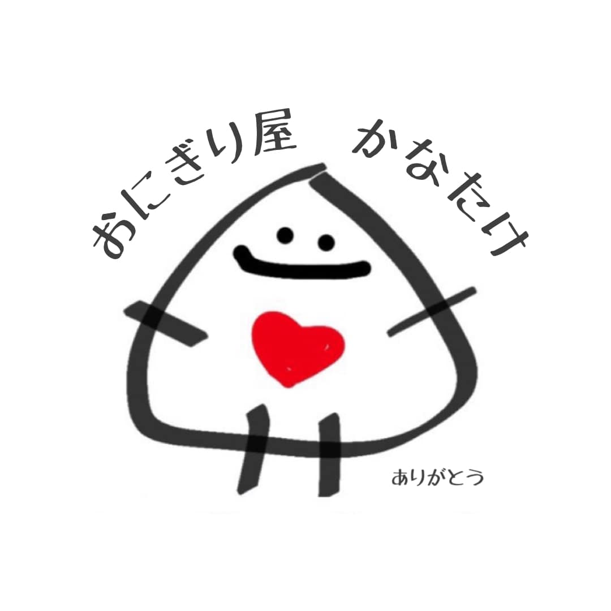

<!-- ===== index.html ===== -->
<!DOCTYPE html>
<html lang="ja">
<head>
  <meta charset="utf-8">
  <title>おにぎり屋 かなたけ｜2025 年 8 月マップ</title>
  <meta name="viewport" content="width=device-width,initial-scale=1">

  <!-- Leaflet CSS -->
  <link rel="stylesheet" href="https://unpkg.com/leaflet@1.9.4/dist/leaflet.css"/>

  <!-- 手書き風フォント -->
  <link href="https://fonts.googleapis.com/css2?family=Yomogi&display=swap" rel="stylesheet">

  <style>
    html,body{height:100%;margin:0;font-family:"Yomogi",sans-serif;}
    #map{height:100%;width:100%;}

    /* ─── 右下固定リスト ─── */
    #list{
      position:fixed;right:8px;bottom:8px;top:auto;
      max-width:60vw;max-height:60vh;overflow-y:auto;
      background:rgba(255,255,255,.9);
      padding:8px 12px;border-radius:8px;
      box-shadow:0 0 6px rgba(0,0,0,.25);
      line-height:1.4;font-size:14px;z-index:1001;
    }
    #list div{cursor:pointer;margin-bottom:4px;}
    #list div:hover{background:#f0f0f0;}

    /* 番号付きおにぎりアイコン */
    .numWrap{position:relative;width:48px;height:48px;}
    .numWrap img{width:48px;height:48px;}
    .numWrap span{
      position:absolute;top:2px;left:0;width:48px;text-align:center;
      font-weight:bold;font-size:18px;color:#fff;text-shadow:0 0 2px #000;
    }

    /* 角丸ポップアップ */
    .leaflet-popup-content-wrapper{
      border-radius:12px;background:#fff8f0;
      box-shadow:0 2px 6px rgba(0,0,0,.25);
    }
    .leaflet-popup-tip{background:#fff8f0;}
  </style>
</head>
<body>

  <div id="map"></div>
  <div id="list"></div>

  <!-- Leaflet JS -->
  <script src="https://unpkg.com/leaflet@1.9.4/dist/leaflet.js"></script>

  <!-- 出店データ -->
  <script src="spots.js"></script>

  <script>
    /* ── パステル調ベースマップ（CartoDB Voyager）── */
    const map = L.map('map',{zoomControl:false}).setView([35.8,139.8],8);
    L.tileLayer(
      'https://{s}.basemaps.cartocdn.com/rastertiles/voyager/{z}/{x}/{y}{r}.png',
      {
        subdomains:'abcd',
        maxZoom:19,
        attribution:
          '&copy; <a href="https://carto.com/">CARTO</a> ' +
          '&copy; <a href="https://openmaptiles.org/">OpenMapTiles</a> ' +
          '&copy; <a href="https://openstreetmap.org/copyright">OSM</a>'
      }
    ).addTo(map);

    /* ── 番号入りアイコン ── */
    function makeIcon(n){
      return L.divIcon({
        html:`<div class="numWrap"><span>${n}</span></div>`,
        className:'',iconSize:[48,48],iconAnchor:[24,24],popupAnchor:[0,-24]
      });
    }

    /* ── マーカー＋サイドリスト ── */
    const list=document.getElementById('list');
    spots.forEach((s,i)=>{
      const m=L.marker([s.lat,s.lon],{icon:makeIcon(i+1)}).addTo(map);
      m.bindPopup(
        `<strong>${s.place}</strong><br>${s.date}${s.time?' '+s.time:''}<br>`+
        `<a href="https://www.google.com/maps/search/?api=1&query=${s.lat},${s.lon}" target="_blank">Googleマップで開く</a>`
      );
      const row=document.createElement('div');
      row.textContent=`${i+1}. ${s.place}`;
      row.onclick=()=>{map.setView([s.lat,s.lon],11);m.openPopup();};
      list.appendChild(row);
    });
  </script>
</body>
</html>
